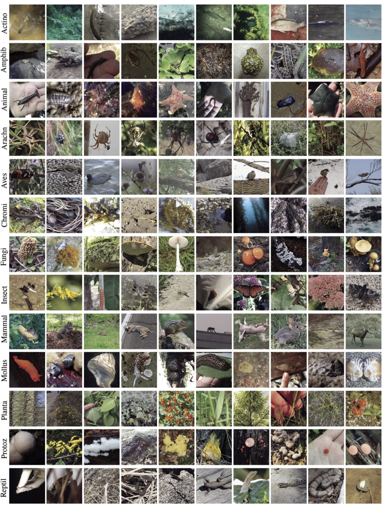
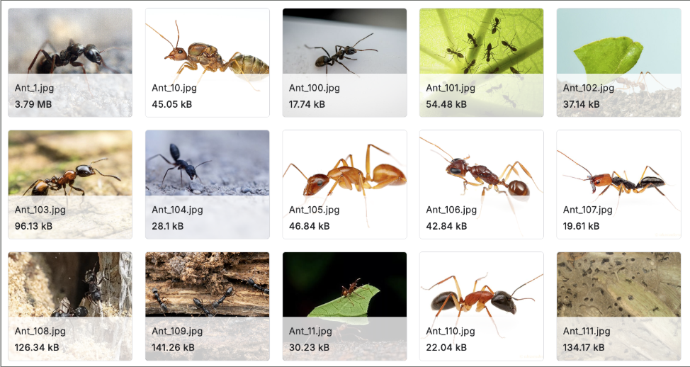
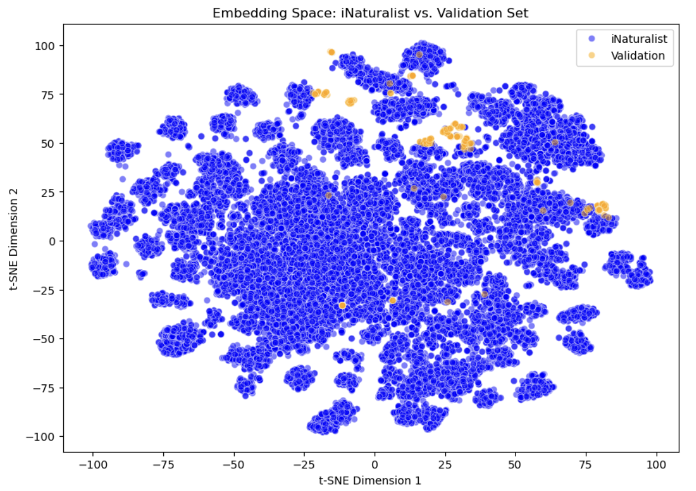
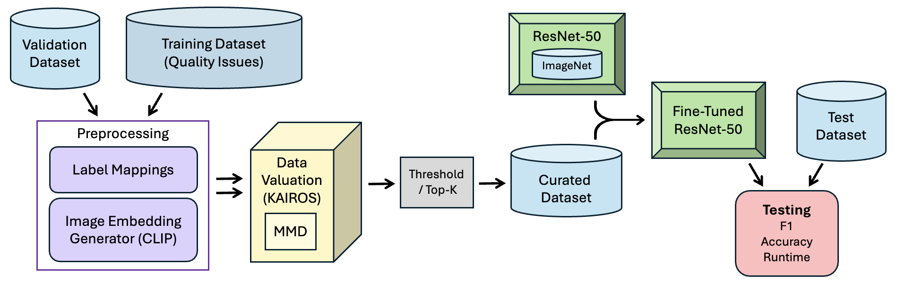
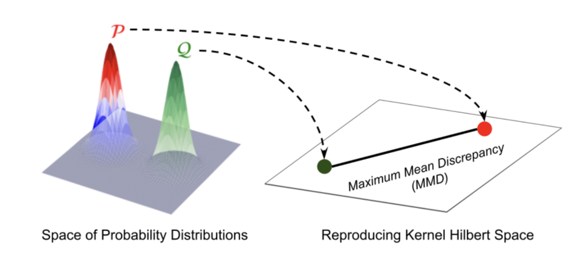
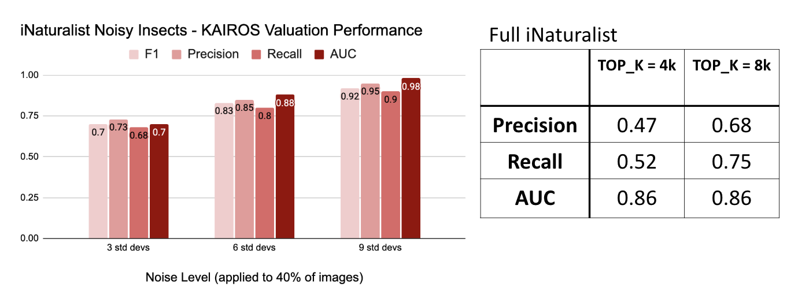
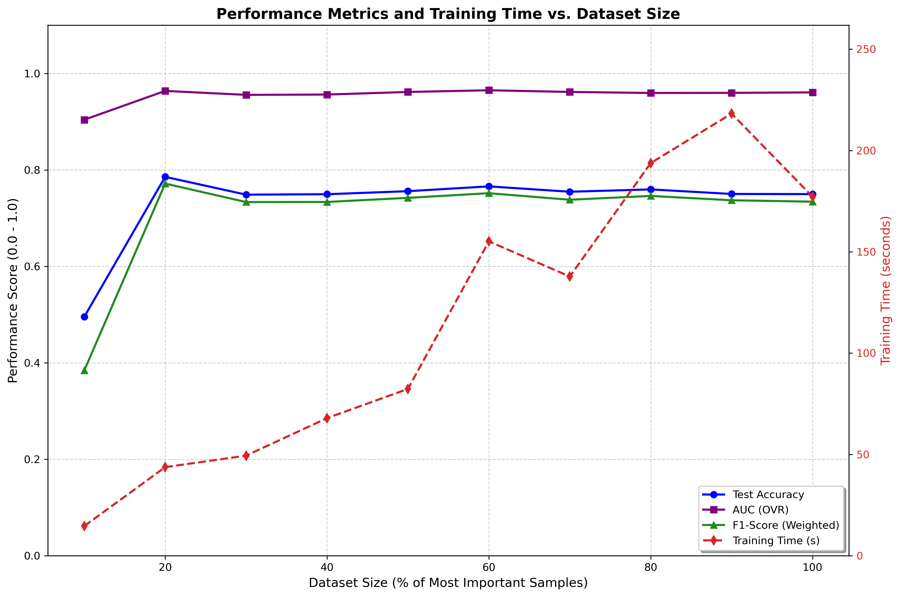

Curating Fine-Tuning Data with KAIROS-Based Valuation 🐞
UC San Diego Data Science Capstone 2026
The Challenge
Massive datasets like iNaturalist are often "messy" and computationally expensive to process. ML engineers need a way to identify high-value data to maintain performance while drastically reducing training costs.
Key Result
KAIROS-curated subsets achieved 99.4% parity with the full dataset (73.3% accuracy) while cutting training time by over 90%.
Introduction
This project serves ML engineers working with limited compute who need to maximize model performance using minimal, high-quality data. While we demonstrate its power here through Image Classification on the iNaturalist 2021 dataset [3], our curation pipeline is a generalizable framework applicable to any high-dimensional noisy data.
Problem
The "Messy" Data Problem
Massive fine-tuning datasets like iNaturalist often contain irrelevant images or mislabeled data that can confuse a model during training.
Sustainability & Costs
Reducing training data isn't just about speed, but also about reducing carbon footprints and cloud compute expenses.
The Manual Bottleneck
Manually sorting through thousands of images to find high-quality training data is difficult. We need an automated way to value and curate data effectively.
Target Users
1. ML Engineers & Researchers
Professionals managing large-scale vision models who require rigorous data-pruning tools to reduce training overhead without sacrificing accuracy.
2. Compute-Constrained Organizations
Startups or academic labs seeking to minimize cloud GPU costs and carbon footprints by training on high-value, representative subsets.
Exploratory Data Analysis
We begin by characterising the two source datasets and verifying that their embedding spaces are compatible before any training occurs.
Datasets
iNaturalist 2021
Large, naturalistic dataset [3] containing a broad mix of species observations, including many irrelevant to our target task. Serves as the noisy training pool.

Example of diverse field observations.
Insect Images Dataset
Smaller, curated collection of high-quality insect photographs covering the target bug categories. Serves as the clean validation reference.

High-quality, curated reference.
Class Overlap & Embedding Distribution Analysis
Class Overlap
Species from iNaturalist were mapped to the broader insect categories in the Insect Images Dataset to assess coverage and identify gaps.
Embedding Distribution
CLIP-ViT-L-14 embeddings from both datasets were projected to a shared space. Overlapping distributions confirm that the validation signal is transferable to the training pool.

Figure: t-SNE projection of CLIP embeddings showing alignment between iNaturalist and Validation sets.
Data Preprocessing & Curation
Raw iNaturalist data is noisy and heterogeneous. The pipeline below standardises labels, generates embeddings, and uses the KAIROS data-valuation framework to surface the highest-quality training samples.
Pipeline

KAIROS for Data Valuation
Key Properties
What makes KAIROS effective:
Background
KAIROS [1] is a model-agnostic data-valuation method that replaces LAVA's Sinkhorn-regularised Wasserstein distance with a closed-form Maximum Mean Discrepancy (MMD) solution, yielding sharper value detection and up to 50× faster runtime.
Each sample receives a net influence score derived from the directional derivative of the MMD. Because MMD supports conditional kernels natively, KAIROS detects both feature noise and label noise simultaneously, with LOO approximation error bounded at O(1/N²).

Application
CLIP-ViT-L-14 embeddings from the full iNaturalist training pool are scored against the clean validation embeddings. The top 4,000 images by KAIROS value score are selected as the curated training set, discarding noisy, off-distribution, or mislabelled samples.
Results

Iteration & Evolution
Initial Approach: We originally simulated data "messiness" by adding noise to CLIP embeddings. However, this tied our results to one specific encoder version, limiting the framework's flexibility.
The Pivot: We shifted noise injection to the Image Pre-processing Stage. By corrupting raw pixels instead of latent vectors, we created a model-agnostic benchmark that reflects real-world visual artifacts like motion blur and sensor noise.
Downstream Model Fine-Tuning
We compared two fine-tuning methods to identify the optimal balance between data volume and model precision:
Partial Unfreezing
Training only the final ResNet layers to adapt pre-trained weights to our specific insect categories.
LoRA Adaptation
Low-Rank Adaptation [3]: injecting trainable rank-decomposition matrices for parameter-efficient learning.
The Fine-tuning Datasets
Models were fine-tuned on the following datasets:
1. Full Dataset
iNaturalist 2021 subset (36,355 images)
2. Random Subsets
10 trials to establish a rigorous performance baseline (2,347 images)
3. KAIROS Curated
High-value images selected via influence valuation (Top 6% of full iNat, 2,347 images)
4. Noise-Curated
Comparing raw noise-injection vs. KAIROS-cleaned data
Performance Tracking
Metrics collected for each experiment:
Experiment Results
We conducted three primary sets of experiments to evaluate the utility of KAIROS-curated subsets in training our robust insect image classifier. All metrics reported as Mean ± Standard Deviation across 3 independent trials.
Original Data Comparison
Comparing KAIROS-curated Top 6% (N=2,347) against the Full iNaturalist (N=36,355) and Random subsets.
| Config | Method | Accuracy | F1 Score | AUC | Train Time (s) |
|---|---|---|---|---|---|
| Curated | LoRA | 0.779 ± 0.014 | 0.763 ± 0.016 | 0.967 ± 0.001 | 159.31 ± 0.16 |
| Full | LoRA | 0.685 ± 0.021 | 0.757 ± 0.017 | 0.978 ± 0.002 | 2505.33 ± 40.90 |
| Random | LoRA | 0.422 ± 0.043 | 0.446 ± 0.057 | 0.920 ± 0.012 | 163.19 ± 2.40 |
Robustness to Noise
Evaluating performance when Gaussian noise is introduced to the training pool.
| Config | Method | Accuracy | F1 Score | AUC | Train Time (s) |
|---|---|---|---|---|---|
| Curated | LoRA | 0.823 ± 0.019 | 0.817 ± 0.019 | 0.978 ± 0.005 | 186.28 ± 1.47 |
| Full | LoRA | 0.835 ± 0.009 | 0.831 ± 0.011 | 0.983 ± 0.001 | 389.29 ± 18.54 |
| Random | LoRA | 0.799 ± 0.020 | 0.792 ± 0.021 | 0.972 ± 0.003 | 202.82 ± 1.58 |
KAIROS Results across Data Sizes
To look under the hood of the KAIROS rankings, we sub-sampled the curated pool (N=2,347) from the Top 10% to 100%. This tested the continuous quality of our valuation function.

Figure: Combined metrics showing the performance plateaus across curation thresholds.
Technical Insight
This internal audit reveals a significant efficiency gap. The top 20% of KAIROS-ranked images provide nearly 98% of the maximum available performance.
As seen in the plot to the left, adding lower-ranked data beyond this threshold increases compute costs linearly while accuracy and F1 scores plateau.
KAIROS successfully prioritizes prototypical, high-contrast samples that provide the cleanest class separation for the ResNet-50 backbone.
Conclusion & Impact
Compute Time Saved
KAIROS-curated subsets reached convergence in 159 seconds, compared to over 41 minutes for the full dataset.
Performance Parity
The curated model maintained near-identical AUC and outperformed the full dataset in raw accuracy by eliminating redundant noise.
Project Takeaways
Maximizing Efficiency: Data valuation identifies high-value images that allow models to learn faster than random sampling.
Scalable Framework: Our end-to-end pipeline is ready to refine noisy datasets into high-quality training data for image classification tasks.
Scope & Limitations
Scope Boundaries: Adapted the existing KAIROS framework [1] for supervised fine-tuning in image classification.
Out of scope: Architecture optimization, self-supervised pre-training, and multi-modal fusion.
Known Limitations: KAIROS assumes the validation set is gold standard. Biased validation sets will propagate bias into the training pool.